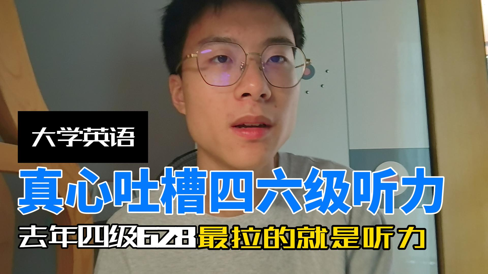

Project / 内容创作与账号运营
Maki 羽轩英语自媒体
独立运营英语学习类自媒体账号，覆盖抖音、小红书、视频号、B 站等平台。负责选题、脚本、拍摄、剪辑、发布、复盘和私信沟通。
829 万+累计播放 / 观看
53 万+累计互动
491 万+单条最高播放

Project / 内容创作与账号运营
独立运营英语学习类自媒体账号，覆盖抖音、小红书、视频号、B 站等平台。负责选题、脚本、拍摄、剪辑、发布、复盘和私信沟通。
Work / Douyin / 2025-07-28
用强情绪入口切入四六级听力问题，再提供更具体的替代路径。
Note / from project archive
英语学习内容不一定从知识点开始，也可以从学习者被压抑的共同感受进入，再提供更清楚的替代路径。
About / a short record
我是一名国际政治本科生，也在持续做英语学习内容、自媒体账号运营、英语产品交付和个人学习系统搭建。我关心英语学习方法、内容表达、自媒体运营、教育产品、AI 辅助创作、学习系统、写作研究和音乐创作。
Now / current state
我在整理自己的内容作品、账号数据、项目经历和复盘方法，希望它们不只是散落在平台里的视频，而是可以被长期查看和验证的作品档案。
Contact / open channel
如果内容、教育产品或 AI 辅助创作与你有关，欢迎通过邮箱联系。
Role / current label
地点：中国